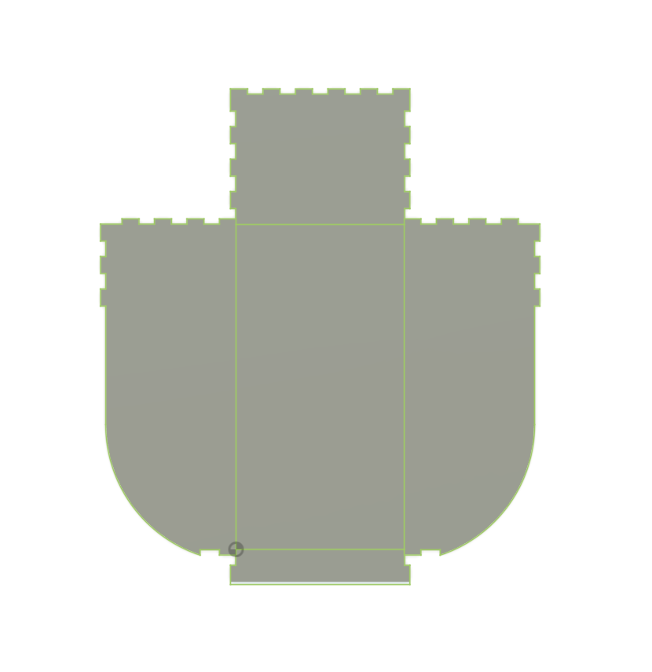
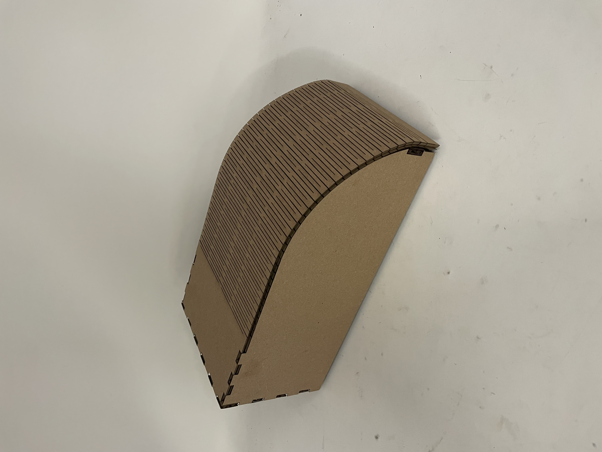
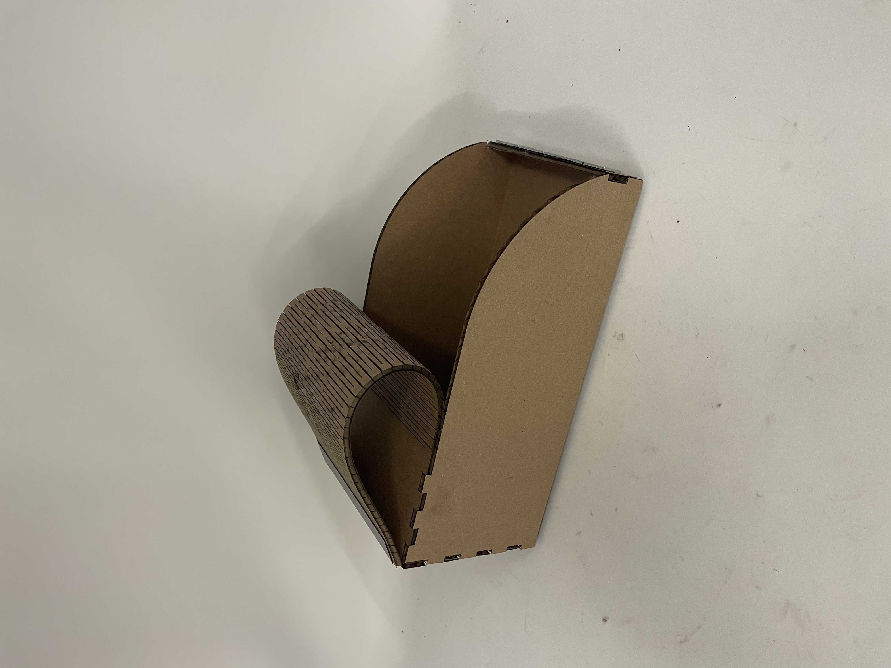
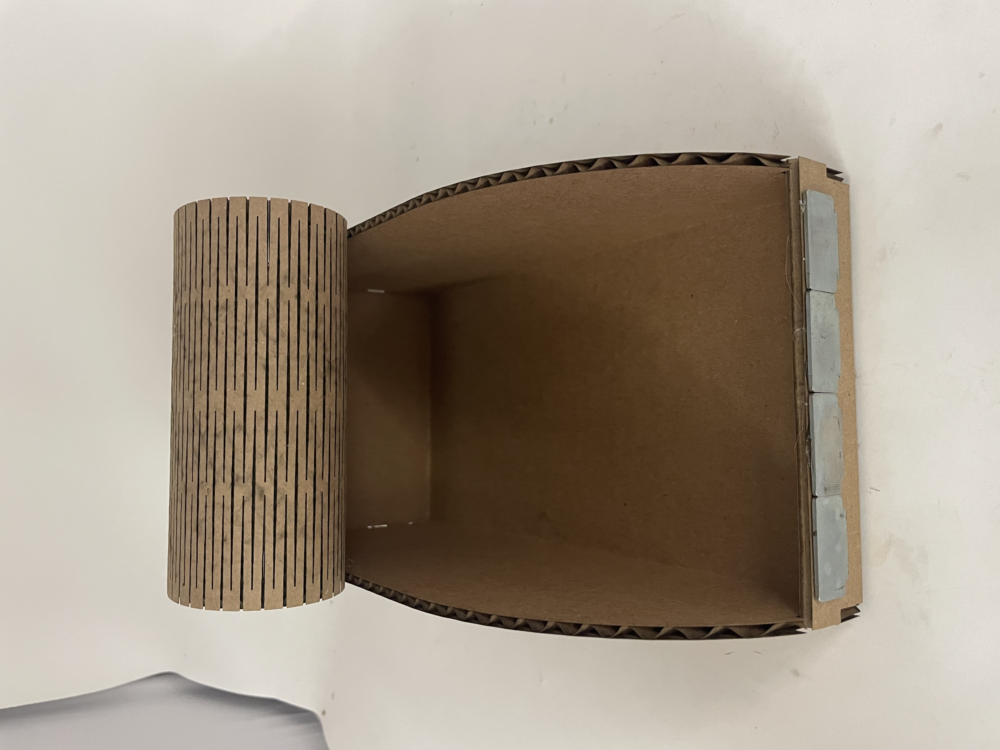

Household Objects
3D Models
Renders
.png)
.png)
.png)
.png)
Screwdriver - Process
Wrench - Process
Tutorial
3D Models
Renders


Text Explanation
To learn Fusion, I followed a few videos of Production Design Online’s YouTube series: Learn Fusion 360 in 30 Days. Through the portion I watched, I learned Fusion techniques including lofting, fillets, tracing images, extruding, and sweeping. Above are some of the objects I modeled. Coming into this week, I knew nothing about Fusion, but thanks to Production Design Online’s videos, I was able to confidently model the two household objects. This is a must-watch series for any beginner!
Cardbord Box
Fusion Sketches

Box Fusion File
Final Product



Design Process
To learn Fusion, I followed a few videos of Production Design Online’s YouTube series: Learn Fusion 360 in 30 Days. Through the portion I watched, I learned Fusion techniques including lofting, fillets, tracing images, extruding, and sweeping. Above are some of the objects I modeled. Coming into this week, I knew nothing about Fusion, but thanks to Production Design Online’s videos, I was able to confidently model the two household objects. This is a must-watch series for any beginner!